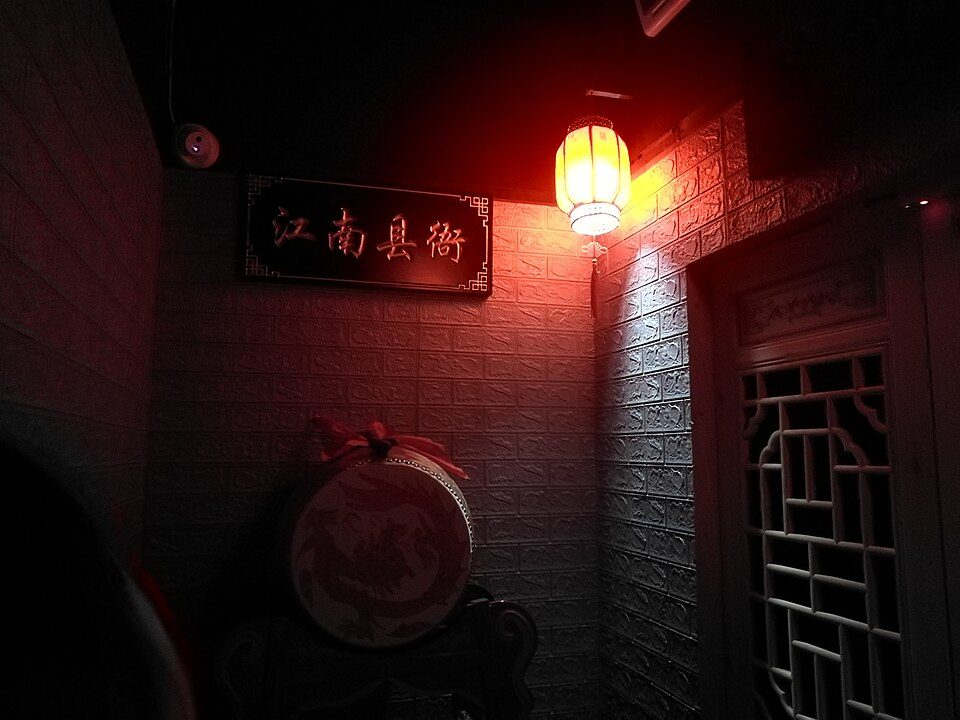
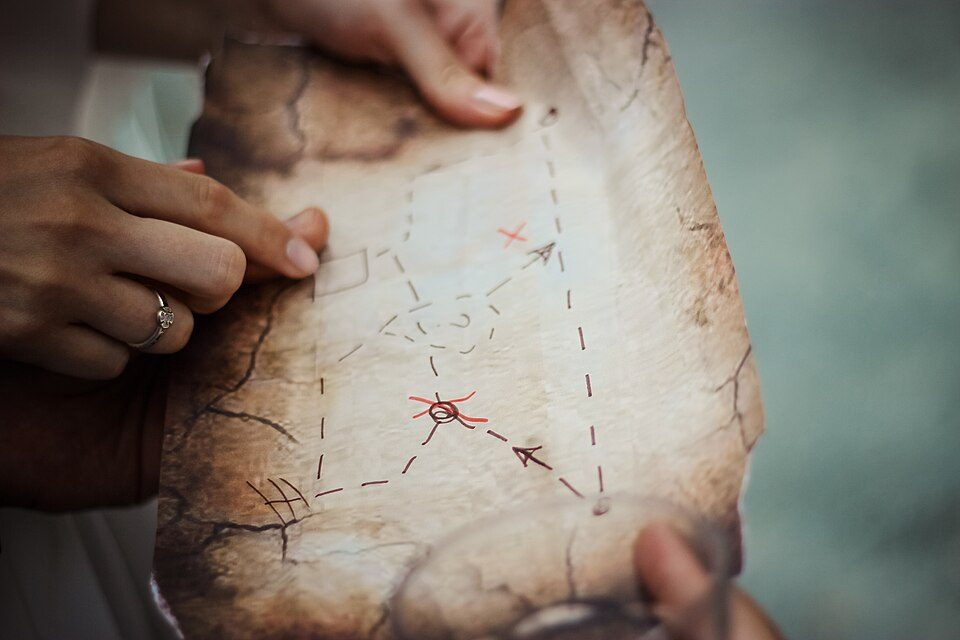

謎解きゲームの主な団体と、初めての遊び方（2026年版）
要点まとめ

謎解きゲームは、物語の中で出される謎を解いて、制限時間内の「脱出」やゴールを目指す体験型のゲームです。この記事では、謎解きを作っている主な団体の特徴と、形式・料金・常設店、初めて参加するときの決まりごとをまとめました。各団体の公式サイトと、財務省・自治体などの公的資料を中心に調べています。料金や公演は入れ替わるので、数字は調査日時点のものです。特定の団体や公演をすすめるものではありません。
謎解きゲームとは：形式の種類
会場に行く「公演型」、街を歩く「周遊型」、家で遊ぶ「持ち帰り型」
財務省関東財務局は、主に3つの形式に分けている[2]
| 形式 | 人数の目安 | どんなものか |
|---|---|---|
| ルーム型 | 2〜10人程度 | 小さめの部屋に実際に閉じ込められ、制限時間内の脱出を目指す |
| ホール型 | 1〜6人程度のチーム | 大きな会場に複数のチームが集まり、チームごとに謎を解く |
| スタジアム型 | 1人〜何人でも | スタジアムや閉園後の遊園地を貸し切った大規模なイベント |
| 街歩き（周遊型） | 1人〜何人でも | 街を歩きながら謎を解く。制限時間がなく、観光しながら巡れる |
| キット・オンライン（持ち帰り型） | — | 謎解きキットやスマホ、Webサイトで自宅から遊ぶ |
見方: 時間を決めて会場で遊ぶ「公演型」はルーム型・ホール型・スタジアム型、時間の制限がないのが「周遊型」と「持ち帰り型」です[2]。初めてなら、自分のペースで進められる周遊型や、1人で申し込めるホール型が入りやすい形式です（筆者の見解）。
主な団体と、その特徴
大手は東京の会社が中心。形式の得意分野がそれぞれ違う
業界の上位はSCRAPやタカラッシュなど6社[2]
| 団体（運営会社） | 設立 | 得意な形式・特徴 |
|---|---|---|
| リアル脱出ゲーム（株式会社SCRAP） | 2008年（2007年に初開催）[3] | ルーム型・ホール型・街歩き・キット。名探偵コナンとのシリーズは累計230万人以上[3] |
| タカラッシュ（株式会社タカラッシュ） | 2003年[10] | 「リアル宝探し」。自治体・旅行会社・テーマパーク向けの企画が中心[10] |
| NAZO×NAZO劇団（株式会社ハレガケ） | 2013年[11] | 街歩き・持ち帰り・オンライン・公演型。自治体とのコラボが多い[12] |
| よだかのレコード（株式会社stamps） | 不明 | 「ドラマチック謎解きゲーム」。公演型・個室型・周遊型、新宿に常設店[13][14] |
| RIDDLER（RIDDLER株式会社） | 2019年[15] | 代表は松丸亮吾氏。東京大学発の謎解きクリエイター集団。テレビ・書籍・地方創生・教育[15] |
| タンブルウィード | 不明 | 自宅で遊ぶ「持ち帰りナゾ」とオンライン[16] |
料金の目安
会場型は1人4,000円前後、街歩きは1,000〜2,000円台
周遊型の相場は1,000〜1,500円（財務局のレポート）[2]
見方: 会場を貸し切って演出する公演型は高く、自治体が観光のために開く周遊型は安い、または無料のものがあります。周遊型は1キットを何人かで使えるものも多く、人数で割るとさらに安くなります（筆者の見解）。
くわしく
- SCRAPのクトゥルフ公演は、11月11日以降の前売が平日3,900円、土日祝4,200円（税込）[1]
- 同じ公演は、6〜18歳が1人950円引き、19〜22歳が350円引きになる[1]
- SCRAPの名探偵コナン公演は、調査日時点で前売3,700円・当日4,000円（税込）[20]
- よだかのレコード『猫箱』は前売4,500円・当日5,000円。4人分のグループ券もある[18]
- NAZO×NAZO劇団「謎の城」は1,800円（税込）で、キットを買って巡る形式[19]
- まちだ謎解きゲームは第1弾1,100円、第2弾2,100円（商店街のクーポン付き）[2]
- 行田市は1キット600円（別に博物館の入館料）、さいたま謎旅は無料[2]
- 荒川区のNAZO×NAZO劇団とのコラボは0円（税込）で、荒川区の主催[21]
SCRAPは2026年11月11日から料金が変わる
SCRAPは11月11日(水)9時から、22歳以下の年齢割引（13〜18歳は最大25%引き、19〜22歳は最大10%引き）を始め、基本料金を原則1人100円値上げします。販売中のイベントも、11日以降に買う分から新料金です[7]。東京ミステリーサーカスは、チケットシステムの点検のため11月10日(火)を休館とし、11日から新料金で販売を再開する予定です（不正アクセスによるものではなく予防的な対策と説明）[22]。
常設店（首都圏・関西）
新宿・歌舞伎町の「東京ミステリーサーカス」は謎解きのテーマパーク
学生団体と、自治体・鉄道とのコラボ

東大の「AnotherVision」から、謎解きの会社も生まれた
自治体や鉄道会社が、観光のために謎解きを開く
町田市の謎解きは年1.5万人以上が参加した[2]
| 企画 | 主催・制作 | 内容 |
|---|---|---|
| 地下謎への招待状2025 | 東京メトロ・SCRAP | 2025年10月〜2026年3月。駅を巡る街歩き型。過去8回で延べ51万人以上[31] |
| まちだ謎解きゲーム | 町田市など・RIDDLER | 2022年から。キットとLINEで市内を巡る。2023年度は約16,200人[32][2] |
| さいたま謎旅 | さいたま市 | 無料。2024年度は大宮・浦和・岩槻の3コースで計約9,200人（筆者の合算）[2] |
| 交差する街の物語 | 大阪ステーションシティ・よだかのレコード | 2026年4月29日〜11月30日。大阪駅周辺を巡る[33] |
| 受話器越しの約束 | 荒川区・NAZO×NAZO劇団 | 2026年11月1日〜2027年1月11日。0円[21] |
初めて参加するときの決まりごと
1人で行ってもよい。開演10分前に受付、ネタバレは禁止
初めての人の脱出率は1%前後。10回目の人は30%（SCRAP）[34]
- 前日まで
前売チケットを買う
前売は参加日の前日23:59まで。完売すると当日券は出ない（SCRAPの例）[20]
- 当日
開演10分前までに受付
遅れると参加できない場合がある。持ち物は基本的に不要で、メモとペンは用意される[6]
- 開演
チームを組んで謎を解く
- 終了後
解説を聞いて終わり
最後に謎の解説がある。内容はSNSなどに書かない[6]
くわしく
- SCRAPのイベントは、1人でも参加できるものがほとんど。服装は普段着でよい[4]
- 謎を解くのに、知識や運動神経はいらないとしている[5]
- 所要時間は10分ほどのものから数時間のものまでさまざま[6]
- 自己都合の払い戻しや、紛失したチケットの再発行はできない[6]
- ネタバレは、開催が終わった後も再演の可能性があるので控えるよう求めている[6]
- 対象年齢は12歳以上が多い。保護者のサポートがあれば6歳以上でも楽しめるとしている[35]
- よだかのレコードも、自己都合の振替・返金はしない。小学生未満は入場できない公演がある[18]
- オンライン型は、スマホやパソコン、筆記用具、ハサミが必要な場合がある[6]
謎解きの検定「謎検」
年2回のオンライン検定。60分で50問、受検料は3,300円から
2026年秋は11月25日〜12月1日に受検できる[36]
今回確認できなかった点
- 関西に本拠を置く謎解き団体や、大阪の常設店を持つ他社の公式情報
- タカラッシュの個別イベントの料金と、よだかのレコードの運営会社の設立年
- SCRAPの11月11日以降の各公演の具体的な料金（クトゥルフ公演以外）
- AnotherVisionの公式サイト
- 謎解きの市場規模についての公的な統計（業界団体の推計のみ）
出典（36件）
閲覧日はいずれも2026年11月6日
- リアル脱出ゲーム×クトゥルフ神話『混沌這い寄る教団からの脱出』（株式会社SCRAP）
- 経済調査レポート「周遊型謎解きを通した地域の活性化について」（2025年4月21日）（財務省関東財務局 経済調査課）
- 会社概要（株式会社SCRAP）
- 初めての方へ（株式会社SCRAP（リアル脱出ゲーム公式））
- リアル脱出ゲームとは（株式会社SCRAP（リアル脱出ゲーム公式））
- よくある質問（株式会社SCRAP（リアル脱出ゲーム公式））
- リアル脱出ゲームに新たな年齢割引が登場！（2026年10月16日）（株式会社SCRAP）
- 本日7月7日は「リアル脱出ゲームの日」！（株式会社SCRAP）
- 沿革（株式会社SCRAP）
- 会社概要（株式会社タカラッシュ）
- 会社概要（株式会社ハレガケ）
- 公式トップページ（NAZO×NAZO劇団（株式会社ハレガケ））
- よだかのレコードとは（よだかのレコード（株式会社stamps））
- 公式トップページ（店舗の住所・営業時間）（よだかのレコード（株式会社stamps））
- 【栄光ゼミナール×RIDDLER】「ナゾトキ地頭タイプ診断 2026春」（RIDDLER株式会社（PR TIMES配信のプレスリリース、2026年4月27日））
- 公式トップページ（タンブルウィード（Tumbleweed））
- 公式トップページ（株式会社タカラッシュ）
- 奇跡の魔女作りし猫箱からの脱出（よだかのレコード（株式会社stamps））
- 歴史リアル謎解きゲーム「謎の城」in高槻・島本（NAZO×NAZO劇団）
- リアル脱出ゲーム×名探偵コナン『疾風の追走からの脱出』（株式会社SCRAP）
- 荒川区×リアル謎解きゲーム「受話器越しの約束」（NAZO×NAZO劇団）
- 【重要】TMCチケット再開スケジュールについて（2026年11月2日）（東京ミステリーサーカス（SCRAP））
- TOKYO MYSTERY CIRCUS とは（東京ミステリーサーカス（SCRAP））
- フロアガイド（東京ミステリーサーカス（SCRAP））
- よくある質問（東京ミステリーサーカス（SCRAP））
- アクセス（東京ミステリーサーカス（SCRAP））
- 店舗一覧（株式会社SCRAP（リアル脱出ゲーム公式））
- Web NDL Authorities「東京大学謎解き制作集団AnotherVision」（国立国会図書館）
- お知らせ「謎解き制作集団AnotherVision 2代目代表・松丸亮吾、最新刊」（株式会社KADOKAWA）
- 南紀白浜・三段壁洞窟で体験型謎解きイベント開催（観光開発株式会社（PR TIMES配信のプレスリリース、2026年6月19日））
- 『地下謎への招待状2025』開催！（2025年9月26日）（東京地下鉄株式会社）
- 記者発表資料「まちだ謎解きゲーム」（2022年6月27日）（町田市）
- 交差する街の物語 大阪ステーションシティ開業15周年✕ドラマチック謎解きゲーム（JR西日本ステーションシティ（キャンペーンサイト））
- 謎検とは？（株式会社SCRAP（謎検公式））
- リアル脱出ゲーム for kids（株式会社SCRAP（リアル脱出ゲーム公式））
- 謎解き能力検定 受検案内（株式会社SCRAP（謎検公式））
写真・画像の出典（2件）
- ルーム型の脱出ゲーム施設の内装（中国・広徳市の例）
写真: 深鸣／Wikimedia Commons（CC BY-SA 4.0） - 宝の地図（イメージ）
写真: N. ellladee／Wikimedia Commons（CC0）